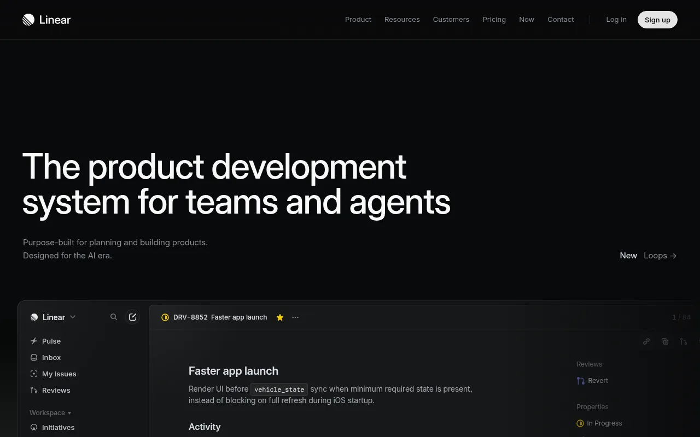
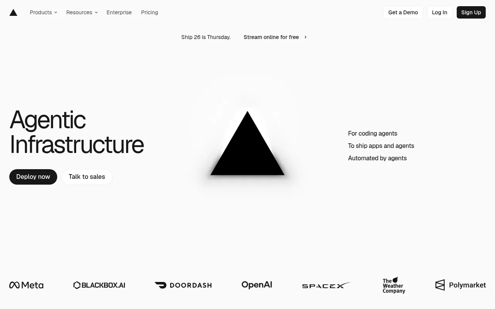
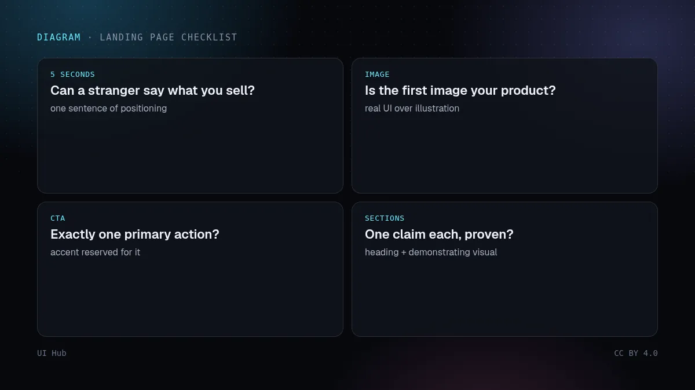

Linear 和 Vercel 的首页是软件行业被模仿最多的页面之一。照抄它们的渐变没抓到重点；值得学的是一组决策，仔细读页面就能看出来。下方截图于 2026 年 10 月 14 日截取，两个网站都经常改版。

Linear 首页首屏 · 截图：Linear（linear.app），2026-10-14 截取，版权归原站所有
值得偷的决策
- 首屏只有一句定位，字很大，配一行简短说明。首屏不放功能列表。
- 产品就是首图。用真实界面（或忠实的渲染）代替插画，访客一眼看到自己将要用什么。
- 颜色克制。大面积中性色，强调色只留给操作和重点。
- 承诺之后紧跟证据：首屏下方就是客户 Logo 或具体的产品能力。
- 每个区块只讲一件事，一个短标题加一张能证明它的图。

Vercel 首页首屏 · 截图：Vercel（vercel.com），2026-10-14 截取，版权归原站所有
不要照抄的部分
- 它们的品牌知名度：大家已经认识这个名字，极简首屏才行得通；新产品可能需要说得更直白。
- 需要专门团队才能做出的重度动效和 3D 渲染；一张清晰的静态产品图胜过一个平庸的动画。

落地页四项检查 · 示意图：UI Hub 原创，CC BY 4.0给你自己页面的检查清单
陌生人五秒内能说出你卖什么吗？第一张图是你真实的产品吗？主 CTA 是不是只有一个？每个区块是否都在证明一个观点？都做到了，渐变可有可无。